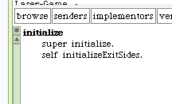

TargetCell
The "exitSides" will be unique for this cell. Once the laser beam enters a TargetCell it does not leave. The #initializeExitSides method needs to be written. A design choice we can make here is to set the exits to be nil.
We also need to create an #initialize metod for this class.
This means we'll have to handle the case where these values are nil. Back to writing unit tests.